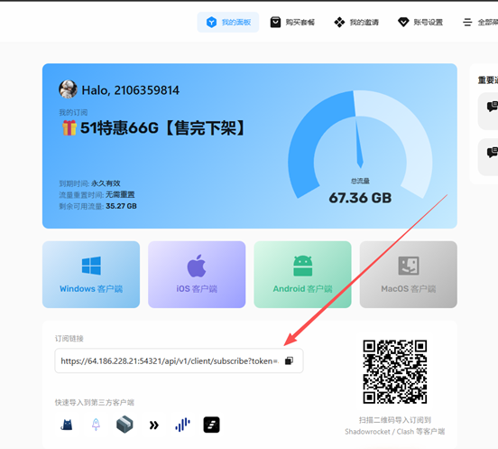
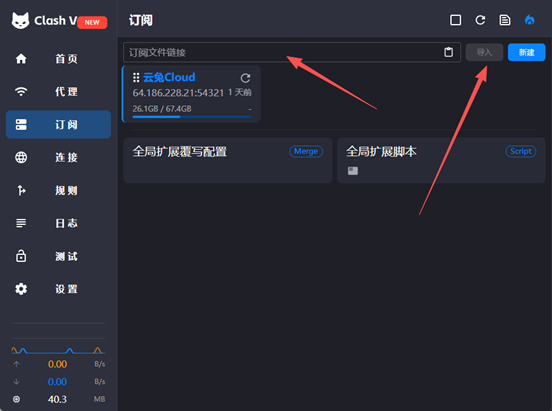
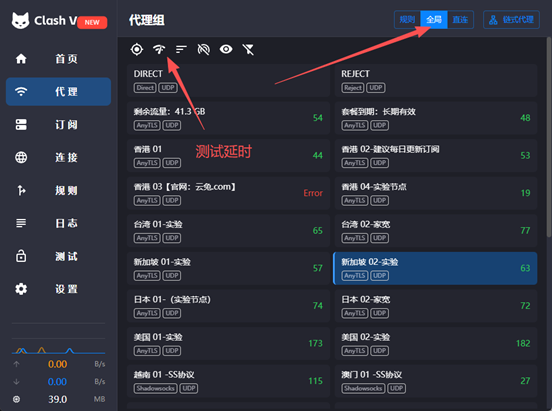
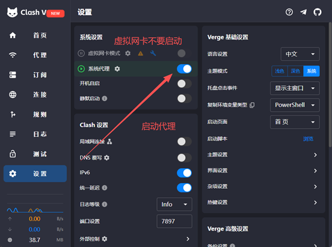

适用范围： 本页中的导入订阅、更新节点、选择线路和启动代理步骤，适用于 Windows、Linux、macOS 三个平台的 Clash Verge 客户端。
1. 获取加速机场
在使用 Clash Verge 之前，你需要先获取一个机场订阅链接。以下是推荐的加速机场：
2. 获取订阅链接
注册并登录机场后，按照以下步骤获取订阅链接：
1
登录机场后台
使用你的账号密码登录到机场网站后台。
2
复制订阅链接
在用户后台找到订阅管理或复制订阅链接的选项，点击复制按钮获取完整的订阅 URL。
💡 提示： 订阅链接通常是一串以
https:// 开头的 URL，请完整复制不要遗漏任何字符。

图 1：在机场后台找到订阅入口并复制订阅链接。
3. 导入订阅到 Clash Verge
1
打开 Clash Verge
启动 Clash Verge 客户端，进入主界面。
2
添加订阅
在左侧菜单中找到"订阅"或"Profiles"选项，点击添加新的订阅配置。
3
粘贴订阅链接
将复制的订阅链接粘贴到 URL 输入框中，点击确认或导入按钮。
4
更新订阅
导入成功后，点击更新按钮获取最新的节点信息。

图 2：在 Clash Verge 中导入订阅链接。
4. 选择节点
1
查看可用节点
订阅更新后，你将看到所有可用的服务器节点列表。
💡 如何选择节点？
选择节点时建议考虑以下因素：
- 延迟：选择延时（Ping）较低的节点，通常连接更稳定
- 地理位置：根据你的使用场景选择
- 使用 ChatGPT：推荐新加坡 → 美国 → 日本
- 游戏加速：根据游戏服务器所在区域选择
- 视频流媒体：选择对应区域的节点
- 负载：避免选择负载过高的节点
⚠️ 注意： 如果某个节点连接失败或速度很慢，建议尝试切换到其他节点。

图 3：优先选择延迟更低、连接更稳定的节点。

图 4：选中合适节点后即可用于后续连接。
5. 启动代理
1
启用系统代理
在 Clash Verge 主界面中，点击"启动"或"连接"按钮启用系统代理。
💡 推荐节点选择：
根据不同的使用场景，建议的节点优先级为：
- ChatGPT：新加坡节点 > 美国节点 > 日本节点
- YouTube/Netflix：根据目标内容区域选择对应节点
- 游戏加速：选择延迟最低的节点
6. 常见问题
⚠️ 订阅更新失败？
如果订阅更新失败，请检查：
- 订阅链接是否正确（可尝试重新复制）
- 网络连接是否正常
- 机场服务是否可用（可能是机场被封）
⚠️ 节点连接超时？
如果所有节点都连接失败，可能是：
- 本地网络问题（尝试重启路由器）
- 机场服务中断（联系机场客服）
- 订阅已过期（续费后重新获取链接）
⚠️ 速度很慢？
如果速度不理想，尝试：
- 切换到其他节点
- 选择负载较低的节点
- 更换机场服务